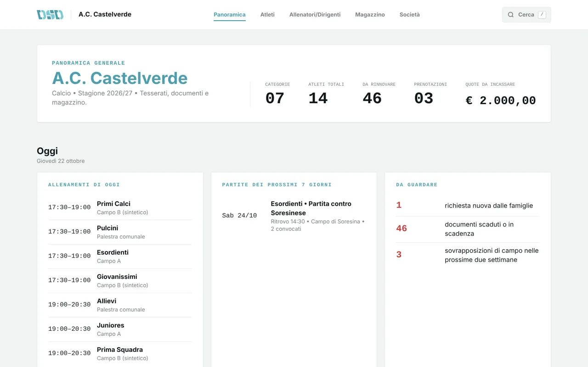

Calcio
«Il collo di bottiglia è in autunno: centinaia di certificati arrivano insieme, spesso come foto sfocate su WhatsApp.»
A.C. CastelverdePer le Associazioni Sportive Dilettantistiche
Digital Sports Desk è il portale della segreteria per le ASD: scadenze di atleti e allenatori, quote e ricevute, orari e campi, magazzino. E un'area per allenatori e famiglie, collegata alla segreteria — senza più fogli sparsi, chat infinite e ansia da scadenza.
Progettato insieme a chi vive la segreteria ogni giorno

Il problema
Certificati scaduti, moduli firmati a mano, foto sfocate su WhatsApp: nelle segreterie dilettantistiche l'informazione è sparsa ovunque, e un solo documento mancante può costare una partita — o una sanzione.
Tra fine agosto e metà ottobre la segreteria riceve centinaia di certificati e tesseramenti in poche settimane.
Le piattaforme federali attestano, ma non ricordano: nessuno avvisa le famiglie della scadenza in arrivo.
Senza un certificato medico valido l'atleta non può allenarsi né giocare. E tenere i certificati in regola è compito della società.
La soluzione
Scorri la pagina: è quello che succede nello scadenziario di DSD quando la segreteria aggiorna una visita medica o un tesseramento. Ogni documento rinnovato cambia colore e il contatore delle urgenze scende, fino a zero.
Documenti scaduti o in scadenza nei prossimi 30 giorni.
Cosa fa per la segreteria
Le cose che oggi rubano più tempo alla segreteria, una per una. Ogni riquadro è una schermata vera del portale, in piccolo.
Una società, tre aree
Ognuno entra nella sua area e vede solo quello che gli serve. Quando qualcuno aggiorna qualcosa, gli altri lo vedono subito. Guarda il viaggio di un certificato medico:
Perché DSD
Non un brief in astratto: nasce da interviste vere con società di calcio, basket, pallavolo e sport di racchetta tra Cremona e Brescia.
La segreteria vede tutto, l'allenatore le sue squadre, la famiglia solo il proprio figlio. Solo i dati che servono, pensato per GDPR e Riforma dello Sport.
Allenatori e famiglie lo usano dal telefono, a bordo campo; la segreteria dal computer. Solo i dati che servono, quando servono.
La ricerca sul campo
Prima di disegnare una sola schermata, abbiamo ascoltato chi vive la segreteria ogni giorno: calcio, basket, pallavolo e sport di racchetta, nel territorio tra Cremona e Brescia.
«Il collo di bottiglia è in autunno: centinaia di certificati arrivano insieme, spesso come foto sfocate su WhatsApp.»
A.C. Castelverde«Serve uno strumento consultabile dallo smartphone, a bordo campo, pochi minuti prima della partita.»
Ju-Vi Ferraroni Cremona — M. AbbiatiDomande frequenti
Non trovi la tua? Scrivici: rispondiamo noi, non un robot.
Un mese di prova gratuito, poi un prezzo su misura per la società. Ne parliamo insieme alla fine della prova, senza impegno.
I dati sono della società: è lei la titolare, DSD li tratta solo per suo conto. Nel servizio attivo saranno conservati su server nell'Unione Europea. Ognuno vede solo la sua parte: la segreteria tutto, l'allenatore le sue squadre, la famiglia solo il proprio figlio.
No. Il portale si apre dal browser, su computer, tablet e smartphone. Allenatori e famiglie lo usano dal telefono, senza scaricare app.
No. Si scarica il modello, si incollano gli atleti dal vostro foglio e si importano tutti insieme. Le scadenze compaiono subito nello scadenziario.
I dati restano vostri: con un clic esportate l'elenco degli atleti in un file che si apre con Excel, e lo portate dove volete.
No, le affianca. Tesseramenti e pratiche ufficiali restano sulle piattaforme federali: DSD tiene in ordine la segreteria di tutti i giorni e vi ricorda cosa sta per scadere.
Il portale
Il prototipo del portale è già navigabile: prova l'area della segreteria, quella dell'allenatore e quella della famiglia.
Prova il portale